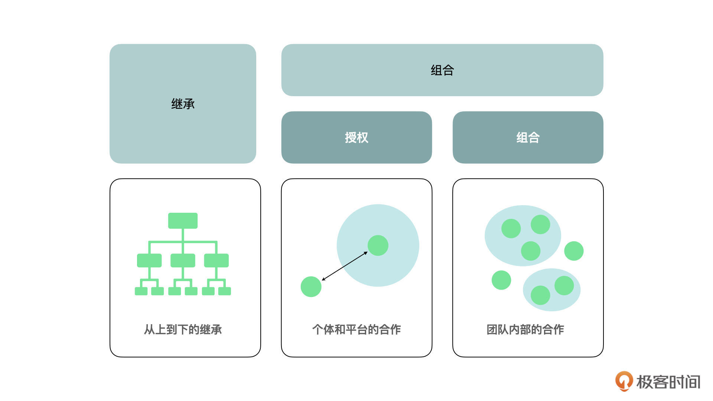

- 00 开篇词 JavaScript的进阶之路.md.html
- 01 函数式vs.面向对象：响应未知和不确定.md.html
- 02 如何通过闭包对象管理程序中状态的变化？.md.html
- 03 如何通过部分应用和柯里化让函数具象化？.md.html
- 04 如何通过组合、管道和reducer让函数抽象化？.md.html
- 05 map、reduce和monad如何围绕值进行操作？.md.html
- 06 如何通过模块化、异步和观察做到动态加载？.md.html
- 07 深入理解对象的私有和静态属性.md.html
- 08 深入理解继承、Delegation和组合.md.html
- 09 面向对象：通过词法作用域和调用点理解this绑定.md.html
- 10 JS有哪8种数据类型，你需要注意什么？.md.html
- 11 通过JS引擎的堆栈了解闭包原理.md.html
- 12 JS语义分析该用迭代还是递归？.md.html
- 13 JS引擎如何实现数组的稳定排序？.md.html
- 14 通过SparkPlug深入了解调用栈.md.html
- 15 如何通过哈希查找JS对象内存地址？.md.html
- 16 为什么环形队列适合做Node数据流缓存？.md.html
- 17 如何通过链表做LRU_LFU缓存？.md.html
- 18 TurboFan如何用图做JS编译优化？.md.html
- 19 通过树和图看如何在无序中找到路径和秩序.md.html
- 20 算法思想：JS中分治、贪心、回溯和动态规划.md.html
- 21 创建型：为什么说Redux可以替代单例状态管理.md.html
- 22 结构型：Vue.js如何通过代理实现响应式编程.md.html
- 23 结构型：通过jQuery看结构型模式.md.html
- 24 行为型：通过观察者、迭代器模式看JS异步回调.md.html
- 25 行为型：模版、策略和状态模式有什么区别？.md.html
- 26 特殊型：前端有哪些处理加载和渲染的特殊“模式”？.md.html
- 27 性能：如何理解JavaScript中的并行、并发？（上）.md.html
- 28 性能：如何理解JavaScript中的并行、并发？（下）.md.html
- 29 性能：通过Orinoco、Jank Busters看垃圾回收.md.html
- 30 网络：从HTTP_1到HTTP_3，你都需要了解什么？.md.html
- 31 安全：JS代码和程序都需要注意哪些安全问题？.md.html
- 32 测试（一）：开发到重构中的测试.md.html
- 33 测试（二）：功能性测试.md.html
- 34 测试（三）：非功能性测试.md.html
- 35 静态类型检查：ESLint语法规则和代码风格的检查.md.html
- 36 Flow：通过Flow类看JS的类型检查.md.html
- 37 包管理和分发：通过NPM做包的管理和分发.md.html
- 38 编译和打包：通过Webpack、Babel做编译和打包.md.html
- 39 语法扩展：通过JSX来做语法扩展.md.html
- 40 Polyfill：通过Polyfill让浏览器提供原生支持.md.html
- 41 微前端：从MVC贫血模式到DDD充血模式.md.html
- 42 大前端：通过一云多端搭建跨PC_移动的平台应用.md.html
- 43 元编程：通过Proxies和Reflect赋能元编程.md.html
- 结束语 JavaScript的未来之路：源于一个以终为始的初心.md.html
- 捐赠
08 深入理解继承、Delegation和组合
你好，我是石川。
关于面向对象编程，最著名的一本书就数GoF（Gang of Four）写的《设计模式：可复用面向对象软件的基础》了。这本书里一共提供了23种不同的设计模式，不过今天我们不会去展开了解这些细节，而是会把重点放在其中一个面向对象的核心思想上，也就是组合优于继承。
在JS圈，有不少继承和组合的争论。其实无论是继承还是组合，我们都不能忘了要批判性地思考。批判性思考的核心不是批判，而是通过深度思考核心问题，让我们对事物能有自己的判断。
所以，无论是继承还是组合，都只是方式、方法，它们要解决的核心问题就是如何让代码更加容易复用。
那么接下来，我们就根据这个思路，看看JavaScript中是通过哪些方法来解决代码复用这个问题的，以及在使用不同的方法时它们各自解决了什么问题、又引起了什么问题。这样我们在实际的业务场景中，就知道如何判断和选择最适合的解决方式了。
继承
在传统的OOP里面，我们通常会提到继承（Inheritance）和多态（Polymorphism）。继承是用来在父类的基础上创建一个子类，来继承父类的属性和方法。多态则允许我们在子类里面调用父类的构建者，并且覆盖父类里的方法。
那么下面，我们就先来看下在JavaScript里，要如何通过构建函数来做继承。
如何通过继承多态重用？
实际上，从ES6开始，我们就可以通过extends的方式来做继承。具体如下所示：
class Widget {
appName = "核心微件";
getName () {
return this.appName;
}
}
class Calendar extends Widget {}
var calendar = new Calendar();
console.log(calendar.hasOwnProperty("appName")); // 返回 true
console.log(calendar.getName()); // 返回 "核心微件"
calendar.appName = "日历应用"
console.log(typeof calendar.getName); // 返回 function
console.log(calendar.getName()); // 返回 “日历应用”
接着来看多态。从ES6开始，我们可以通过super在子类构建者里面调用父类的构建者，并且覆盖父类里的属性。可以看到在下面的例子里，我们是通过super将Calendar的appName属性从“核心微件”改成了“日历应用”。
class Widget {
constructor() {
this.appName = "核心微件";
}
getName () {
return this.appName;
}
}
class Calendar extends Widget {
constructor(){
super();
this.appName = "日历应用";
}
}
var calendar = new Calendar();
console.log(calendar.hasOwnProperty("appName")); // 返回 true
console.log(calendar.getName()); // 返回 "日历应用"
console.log(typeof calendar.getName); // 返回 function
console.log(calendar.getName()); // 返回 “日历应用”
在一些实际的例子，如React这样的三方库里，我们也经常可以看到一些继承的例子，比如我们可以通过继承React.Component来创建一个WelcomeMessage的子类。
class WelcomeMessage extends React.Component {
render() {
return <h1>Hello, {this.props.name}</h1>;
}
}
授权
说完了继承，我们再来看授权这个方法。
什么是授权（Delegation）呢？我打个比方，这里的授权不是我们理解的作为领导（父类）给下属（子类）授权，而是作为个体对象可以授权给一个平台或者他人来一起做一件事。
就好像我和极客时间合作，我的个人精力和专业能力只允许我尽量做好内容，但是我没有精力和经验去做编辑、后期和推广等等，这时就授权给极客时间相关的老师来一起做，我在这件事、这个过程中只是专心把内容的部分做好。
如何通过授权做到重用？
在前面的例子中，结合我们在第1讲里提到的基于原型链的继承，我们会发现使用JavaScript无论是通过函数构建也好，还是加了语法糖的类也好，来模拟一般的面向对象语言，比如Java的类和继承，对于有些开发者来说是比较反直觉的。在使用的时候需要大量的思想转换，才能把JavaScript的底层逻辑转换成实际呈现出来的实现。
那么有没有一种方式可以让代码更直观呢？这种方式其实就是通过原型本身来做授权会更符合直觉。从ES5开始，JavaScript就支持了Object.create()的方法。下面我们来看一个例子：
var Widget = {
setCity : function(City) {this.city = City; },
outputCity : function() {return this.city;}
};
var Weather = Object.create(Widget);
Weather.setWeather = function (City, Tempreture) {
this.setCity(City);
this.tempreture = Tempreture;
};
Weather.outputWeather = function() {
console.log(this.outputCity()+ ", " + this.tempreture);
}
var weatherApp1 = Object.create(Weather);
var weatherApp2 = Object.create(Weather);
weatherApp1.setWeather("北京","26度");
weatherApp2.setWeather("南京","28度");
weatherApp1.outputWeather(); // 北京, 26度
weatherApp2.outputWeather(); // 南京, 28度
可见，我们创建的Weather天气预报这个对象，授权给了Widget，让Widget在得到授权的情况下，帮助Weather来设定城市和返回城市。Widget对象在这里更像是一个平台，它在得到Weather的授权后为Weather赋能。而Weather对象可以在这个基础上，专注于实现自己的属性和方法，并且产出weatherApp1和weatherApp2的实例。
当然也有开发者认为class的方式没有什么反直觉的，那授权同样可以通过class来实现。比如我们如果想在上一讲提到过的集合（Set）和字典（Map）的基础上，加上计数的功能，可以通过继承Set来实现。但是我们也可以反之，在把部分功能授权给Map的基础上，自己专注实现一些类似Set的API接口。
class SetLikeMap {
// 初始化字典
constructor() { this.map = new Map(); }
// 自定义集合接口
count(key) { /*...*/ }
add(key) { /*...*/ }
delete(key) { /*...*/ }
// 迭代返回字典中的键
[Symbol.iterator]() { return this.map.keys(); }
// 部分功能授权给字典
keys() { return this.map.keys(); }
values() { return this.map.values(); }
entries() { return this.map.entries(); }
}
组合
说完了授权，我们再来看看组合。当然上面我们说的授权，广义上其实就是一种组合。但是这种组合更像是“个体和平台的合作”；而另一种组合更像是“团队内部的合作”，它也有很多的应用和实现方式，我们可以来了解一下。

如何通过借用做到重用？
在JavaScript中，函数有自带的apply和call功能。我们可以通过apply或call来“借用”一个功能。这种方式，也叫隐性混入（Implicit mixin）。比如在数组中，有一个原生的slice的方法，我们就可以通过call来借用这个原生方法。
如下代码示例，我们就是通过借用这个功能，把函数的实参当做数组来slice。
function argumentSlice() {
var args = [].slice.call(arguments, 1, 3);
return args;
}
// example
argumentSlice(1, 2, 3, 4, 5, 6); // returns [2,3]
如何通过拷贝赋予重用？
除了“借力”以外，我们还能通过什么组合方式来替代继承呢？这就要说到“拷贝”了。这个方法顾名思义，就是把别人的属性和方法拷贝到自己的身上。这种方式也叫显性混入（Explicit mixin）。
在ES6之前，人们通常要偷偷摸摸地“抄袭”。在ES6之后，JavaScript里才增加了“赋予”，也就是Object.assign()的功能，从而可以名正言顺地当做是某个对象“赋予”给另外一个对象它的“特质和能力”。
那么下面，我们就先看看在ES6之后，JavaScript是如何名正言顺地来做拷贝的。
首先，通过对象自带的assign()，我们可以把Widget的属性赋予calendar，当然在calendar里，我们也可以保存自己本身的属性。和借用一样，借用和赋予都不会产生原型链。如以下代码所示：
var widget = {
appName : "核心微件"
}
var calendar = Object.assign({
appVersion: "1.0.9"
}, widget);
console.log(calendar.hasOwnProperty("appName")); // 返回 true
console.log(calendar.appName); // 返回 “核心微件”
console.log(calendar.hasOwnProperty("appVersion")); // 返回 true
console.log(calendar.appVersion); // 返回 “1.0.9”
好，接着我们再来看看在ES6之前，人们是怎么通过“抄袭”来拷贝的。
这里实际上分为“浅度拷贝”和“深度拷贝”两个概念。“浅度拷贝”类似于上面提到的赋予assign这个方法，它所做的就是遍历父类里面的属性，然后拷贝到子类。我们可以通过JavaScript中专有的for in循环，来遍历对象中的属性。
细心的同学可能会发现，我们在第2讲中说到用拷贝来做到不可变时，就了解过通过延展操作符来实现浅拷贝的方法了。
// 数组浅拷贝
var a = [ 1, 2 ];
var b = [ ...a ];
b.push( 3 );
a; // [1,2]
b; // [1,2,3]
// 对象浅拷贝
var o = {
x: 1,
y: 2
};
var p = { ...o };
p.y = 3;
o.y; // 2
p.y; // 3
而在延展操作符出现之前，人们大概可以通过这样一个for in循环做到类似的浅拷贝。
function shallowCopy(parent, child) {
var i;
child = child || {};
for (i in parent) {
if (parent.hasOwnProperty(i)) {
child[i] = parent[i];
}
}
return child;
}
至于深度拷贝，是指当一个对象里面存在嵌入的对象就会深入遍历。但这样会引起一个问题：如果这个对象有多层嵌套的话，是每一层都要遍历吗？究竟多深算深？还有就是如果一个对象也引用了其它对象的属性，我们要不要也拷贝过来？
所以相对于深度拷贝，浅度拷贝的问题会少一些。但是在第2讲的留言互动区，我们也说过，如果我们想要保证一个对象的深度不可变，还是需要深度拷贝的。深度拷贝的一个相对简单的实现方案是用JSON.stringify。当然这个方案的前提是这个对象必须是JSON-safe的。
function deepCopy(o) { return JSON.parse(JSON.stringify(o)); }
同时，在第2讲的留言区中，也有同学提到过另外一种递归的实现方式，所以我们也大致可以通过这样一个递归来实现：
function deepCopy(parent, child) {
var i,
toStr = Object.prototype.toString,
astr = "[object Array]";
child = child || {};
for (i in parent) {
if (parent.hasOwnProperty(i)) {
if (typeof parent[i] === "object") {
child[i] = (toStr.call(parent[i]) === astr) ? [] : {};
deepCopy(parent[i], child[i]);
} else {
child[i] = parent[i];
}
}
}
return child;
}
如何通过组合做到重用？
上面我们说的无论是借用、赋予，深度还是浅度拷贝，都是一对一的关系。最后我们再来看看，如何通过ES6当中的assign来做到组合混入，也就是说把几个对象的属性都混入在一起。其实方法很简单，以下是参考：
var touchScreen = {
hasTouchScreen : () => true
};
var button = {
hasButton: () => true
};
var speaker = {
hasSpeaker: () => true
};
const Phone = Object.assign({}, touchScreen, button, speaker);
console.log(
hasTouchScreen: ${ Phone.hasChocolate() }
hasButton: ${ Phone.hasCaramelSwirl() }
hasSpeaker: ${ Phone.hasPecans() }
);
React中的组合优于继承
在React当中，我们也可以看到组合优于继承的无处不在，并且它同样体现在我们前面讲过的两个方面，一个是“团队内部的合作”，另一个是“个体与平台合作”。下面，我们先看看“团队内部的合作”的例子，在下面的例子里，WelcomeDialog就是嵌入在FancyBorder中的一个团队成员。
function FancyBorder(props) {
return (
<div className={'FancyBorder FancyBorder-' + props.color}>
{props.children}
</div>
);
}
function WelcomeDialog() {
return (
<FancyBorder color="blue">
<h1 className="Dialog-title">
Welcome
</h1>
<p className="Dialog-message">
Thank you for visiting our spacecraft!
</p>
</FancyBorder>
);
}
另外，我们也可以看到“个体与平台合作”的影子。在这里，WelcomeDialog是一个“专业”的Dialog，它授权给Dialog这个平台，借助平台的功能，实现自己的title和message。这里就是用到了组合。
function Dialog(props) {
return (
<FancyBorder color="blue">
<h1 className="Dialog-title">
{props.title}
</h1>
<p className="Dialog-message">
{props.message}
</p>
</FancyBorder>
);
}
function WelcomeDialog() {
return (
<Dialog
title="Welcome"
message="Thank you for visiting our spacecraft!" />
);
}
总结
这节课，我们了解了通过JavaScript做到代码复用的几种核心思想和方法，从传统的继承，到JavaScript特色的授权以及组合等方式都有分析。虽然我说授权和组合优于继承，但实际上它们之间的关系不是非黑即白的。
我们看到在前端圈，有很多大佬比如道格拉斯·克罗克福德（Douglas Crockford）和凯尔·辛普森（Kyle Simpson），都是基于授权的对象创建的积极拥护者；而像阿克塞尔·劳施迈尔博士（Dr. Axel Rauschmayer）则是基于类的对象构建的捍卫者。
我们作为程序员，如果对对象和面向对象的理解不深入，可能很容易在不同的论战和观点面前左摇右摆。而实际的情况是，真理本来就不止一个。我们要的“真理”，只不过是通过一个观察角度，形成的一个观点。这样，才能分析哪种方式适合我们当下要解决的问题。这个方式，只有在当下，才是“真理”。而我们通过这个单元整理的方法，目的就是帮助我们做到这样的观测。
思考题
在前面一讲中，我们试着通过去掉对象私有属性的语法糖，来看如何用更底层的语言能力来实现类似的功能。那么，今天你能尝试着实现下JS中的类和继承中的super，以及原型和授权中的Object.create()吗？
欢迎在留言区分享你的答案、交流学习心得或者提出问题，如果觉得有收获，也欢迎你把今天的内容分享给更多的朋友。我们下节课见！
© 2019 - 2023 Liangliang Lee. Powered by gin and hexo-theme-book.